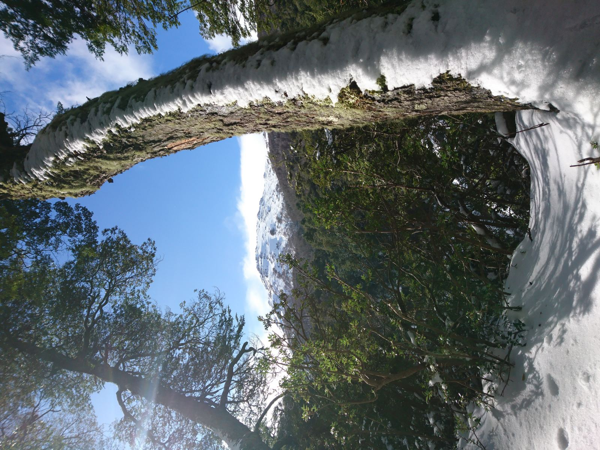
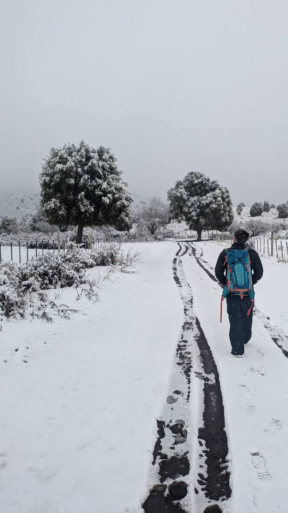
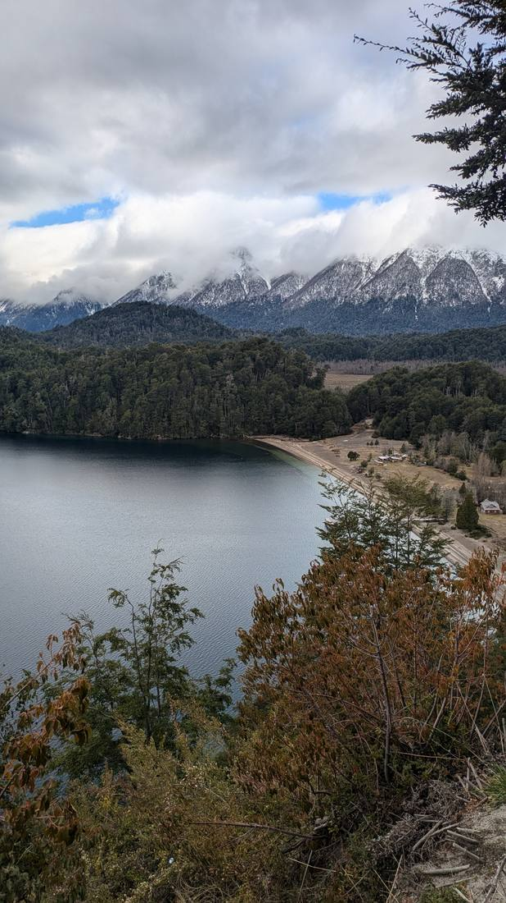
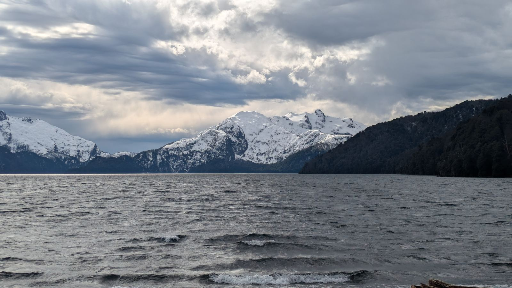
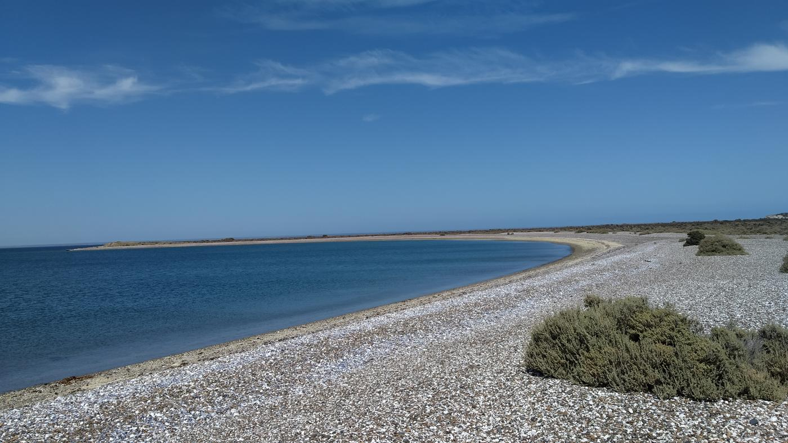
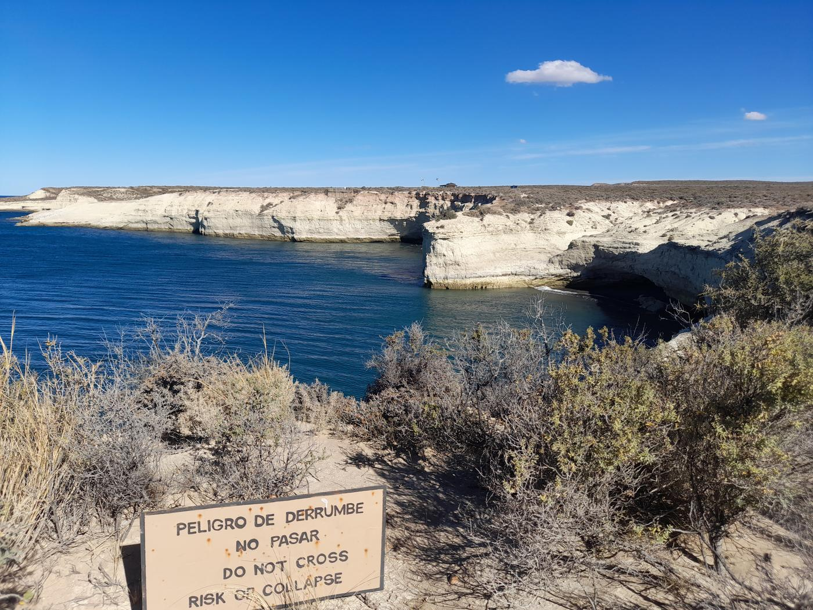
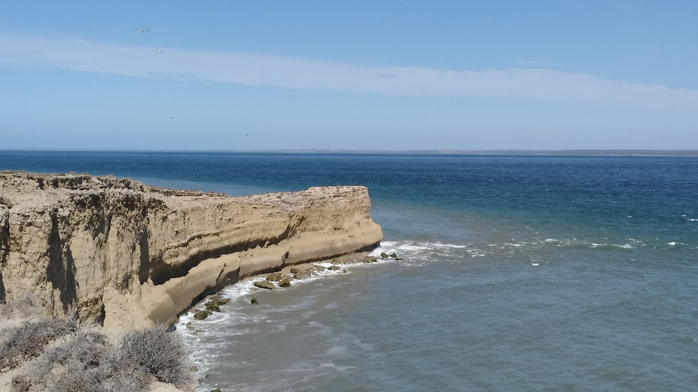
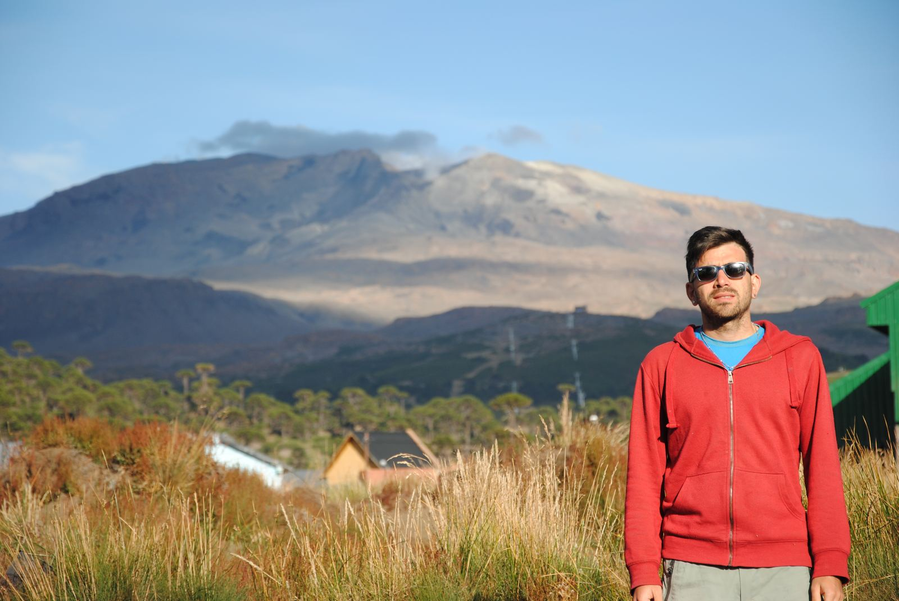

Salidas de un día y expediciones largas para leer el paisaje volcánico, glaciario y marino de la Patagonia, guiadas por un Doctor en Geología.
Cada salida combina la interpretación científica del territorio con la experiencia de estar en él: volcanes activos, glaciares, fauna marina y fósiles explicados por quien los estudia, no por quien los memorizó.
Desde una caminata de medio día hasta expediciones de una semana. Grupos reducidos, siempre con guía personalizado, y la posibilidad de sumar alojamiento si preferís no organizarlo por tu cuenta.
Cuatro experiencias, de la más científica a la más panorámica.
Expedición científica guiada por un Dr. en Geología en el volcán activo más accesible de Argentina. Muestreo en la caldera, géiseres, azufre nativo y una pieza de música electrónica generada con los sonidos del volcán.
Trekking junto al volcán Copahue, termas de origen volcánico y un valle que se lee como un libro de geología abierto: vulcanismo activo, fumarolas y geomorfología glaciaria.
Batea Mahuida y las dos caras del volcán Lanín, entre araucarias, lavas y morenas glaciarias. Pinturas rupestres, geomorfología del río Aluminé y cierre opcional en los 7 Lagos.
Ballenas en Puerto Pirámides, pingüinos y elefantes marinos en Caleta Valdés y Punta Tombo, fósiles marinos, el Museo Egidio Feruglio y el desembarco galés en Gaiman.
Medio día para diferenciar playas de arena y de grava, con una caminata corta y opción de cierre en una cervecería artesanal. Ideal si no hacés la salida larga completa.
Asesoramiento personalizado para armar tu viaje por Patagonia: itinerarios, logística y recomendaciones, sin necesidad de sumarte a una salida grupal.
Consultar asesoría →| Salida | Dic | Ene | Feb | Mar | Abr |
|---|---|---|---|---|---|
| Caviahue — La Islandia de Sudamérica | 2da y 4ta sem. | 2da y 4ta sem. | 2da y 4ta sem. | Consultar | Consultar |
| Volcanes Neuquinos | 1ra sem. | 1ra y 3ra sem. | 1ra y 3ra sem. | Consultar | Consultar |
| Copahue Sessions | — | Temporada | Temporada | Temporada | — |
| Mares antiguos, gigantes vivos | Consultar — todos los meses | Consultar — todos los meses | Consultar — todos los meses | Consultar — todos los meses | Consultar — todos los meses |
Temporadas aproximadas, según fuentes oficiales y de turismo de la zona.
| Especie | Temporada |
|---|---|
| Ballena franca austral | Junio – diciembre (pico set–nov) |
| Pingüinos magallánicos | Septiembre – abril |
| Elefantes marinos | Todo el año (pico set–dic, crías ene–feb) |
| Lobos marinos de un pelo | Todo el año (crías en enero) |
| Orcas | Feb–abr y set–nov (Punta Norte) |
| Delfín oscuro | Noviembre – marzo |


Cascada del Agrio, el cráter activo, la caminata y el bosque de araucarias — todo en la misma salida.




El cono del Lanín, la caminata sobre nieve y los espejos de agua de la ruta de los 7 Lagos.


Los acantilados turquesa, la pingüinera de Punta Tombo y las colonias de lobos marinos, todo en la misma salida.




Investigador y docente. Trabajo e investigo en Patagonia, eso me permitió recorrer todos sus rincones. Y mi pasión por la enseñanza y divulgar conocimiento me llevaron a querer mostrar la cara verdadera de los paisajes.
¿Te sumás a la aventura?